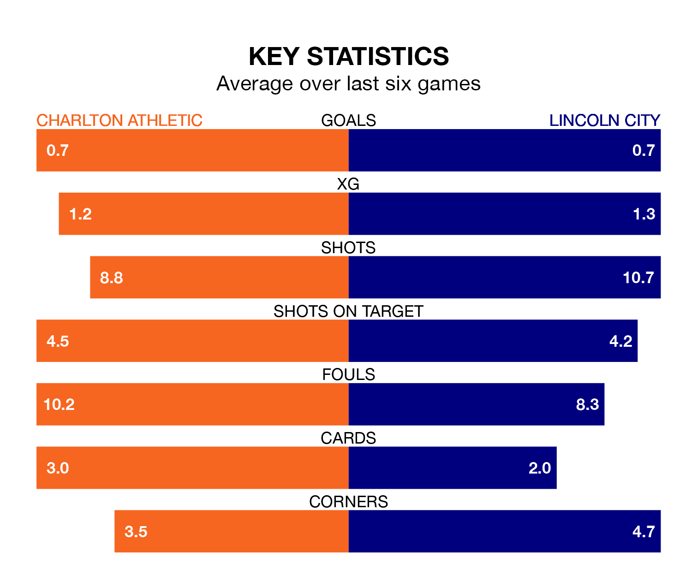

Charlton Athletic are on a terrible run ahead of hosting Lincoln City at the Valley on Tuesday, with just one point collected from their last six games.
The Addicks have picked up just one draw in their last six EFL League One games, and face an Imps side whose last six games have brought two wins and three draws.
In the last 10 years, Charlton and Lincoln have played each other on seven occasions. Charlton won two of them, Lincoln four, and they drew once.
On average, the Addicks scored 1.1 goals and the Imps 1.6 in those matches.
Their last meeting was on October 24, when Lincoln won 3-1 at home.
In Alfie May, Charlton have one of the league's most on-form strikers so far this season. He has notched 16 goals in 28 appearances, to sit third in the scoring charts.
His goal rate of one every 157 minutes is quicker than that of Daniel Mandroiu, Lincoln's top scorer with a goal every 262 minutes, and a total of five goals in 20 games.
Athletic are 20th in the table after 31 games, of which they have won seven and drawn 10, earning 31 points.
City are nine places ahead of the Addicks in 11th, with 10 wins and 11 draws putting them on 41 points.
With 33 goals in 31 games so far this season, the Imps are scoring at below the league average rate with 1.1 goals per game. But they are conceding fewer than average too, letting in 31 goals at a rate of 1.0 per game.
The hosts, meanwhile, are above average scorers, with 1.4 goals per game, compared to a league average of 1.3. They have conceded 1.5 goals per game.
Charlton's last match was on Saturday, a 2-0 loss against Reading.
Lincoln beat Fleetwood Town 2-1 last time out, also on Saturday, with Ben House and Lasse Sørensen on the scoresheet.
Tuesday's match will be refereed by David Rock, who has taken charge of nine EFL League One games so far this season, issuing three red cards and booking 36 players. He has awarded two penalties.
The last Charlton game Rock refereed was a 4-1 home win against Exeter City on October 3. His last Lincoln match was their 3-0 win away at Cambridge United on November 28.
Updated: 13:30 (UTC), 12/02/24